İç Mekân Ürünü
2025–2026 · MEG Custom Marble
Bloktan mimari bir öğeye
MEG Custom Marble için New York ve Miami'deki konut projelerine yönelik geliştirdiğim ölçüye özel mermer ürünler: çift lavabolu banyo dolapları, basamaklı ve klasik şömine çerçeveleri, tek parça küvet, ayaklı lavabo, mutfak adası ve mermer kapaklı mobilyalar.
Her plaka farklı olduğu için tasarım damar dokusunu yerleştirmekle başlar. 3D modelleme ve görselleştirmenin yanında, atölyenin doğrudan kesime geçebileceği okunaklı üretim çizimlerini de hazırladım.
Lavabo, küvet ve ayaklı lavabo tek bir taş kütlesi gibi okunsun diye hazneler gövdeye oyuldu. Damarlar kesimden önce yerleştirildi, böylece desen yüzeyden hazneye kesintisiz akar.
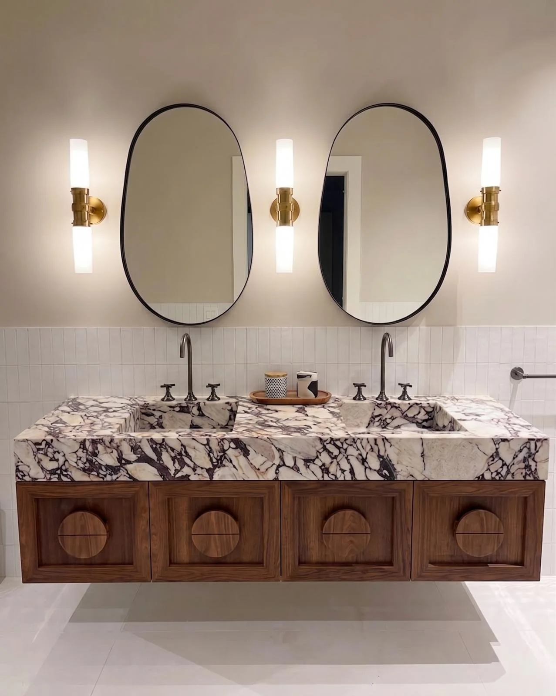
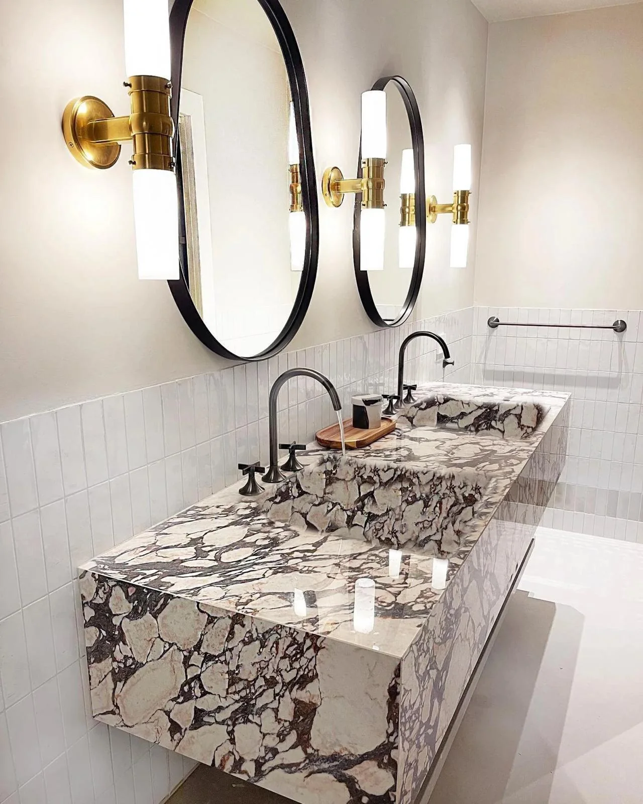
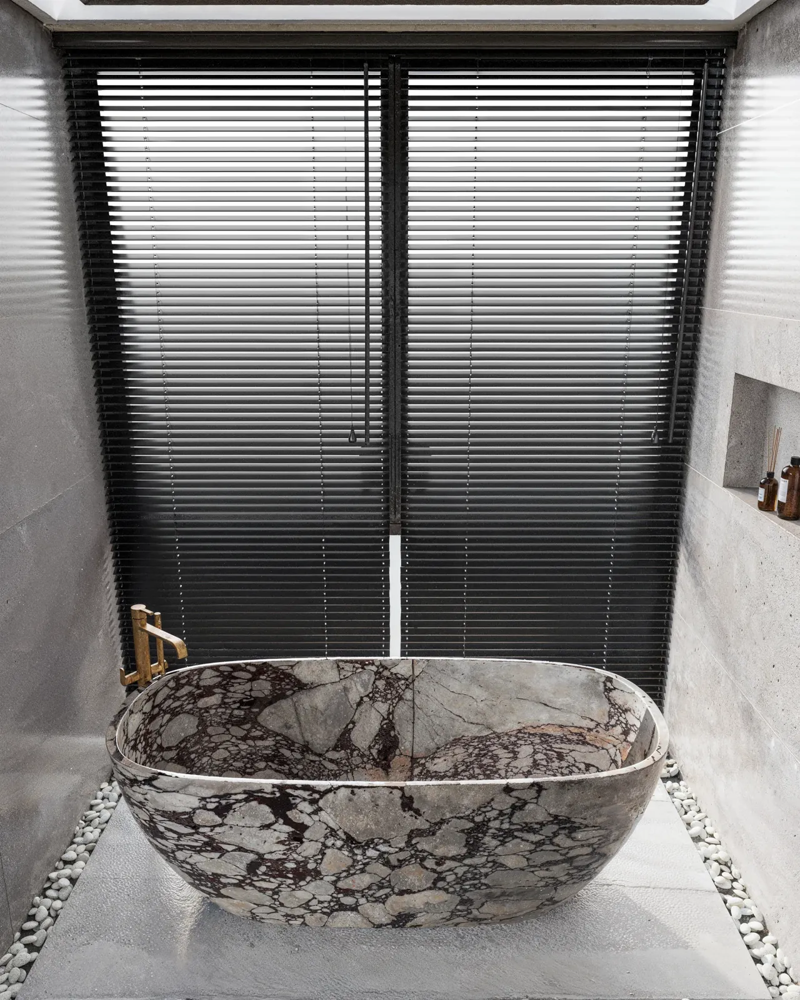
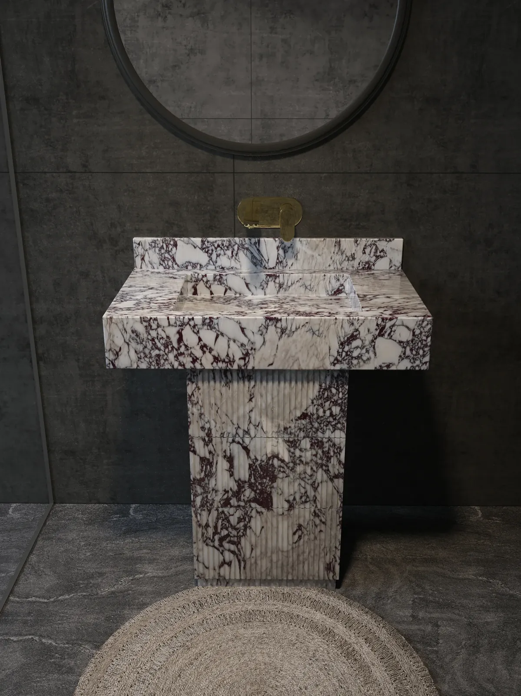
Şömine, mutfak adası ve mobilyada taş, odanın ana nesnesi olarak ele alındı. Basamaklı çerçeve, şelale kenarlı ada ve blok sehpa sade geometriyle damarı öne çıkarır.
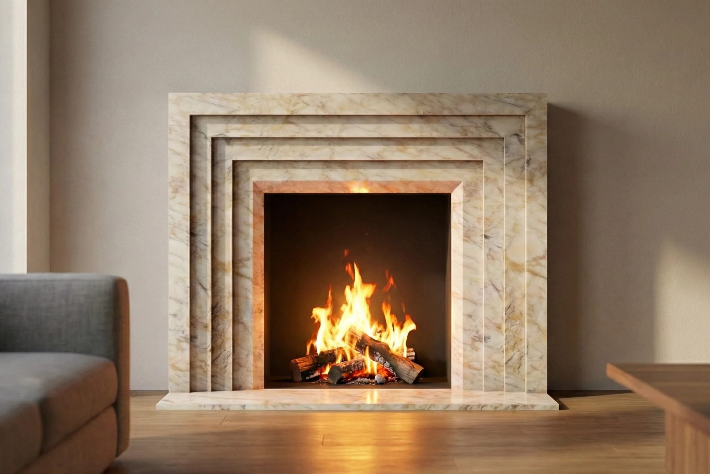
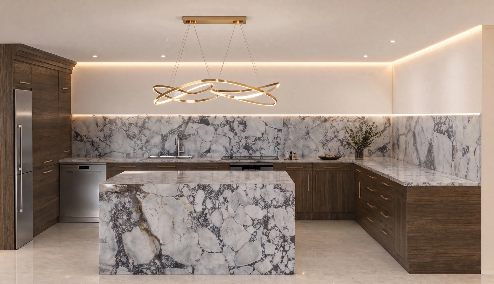
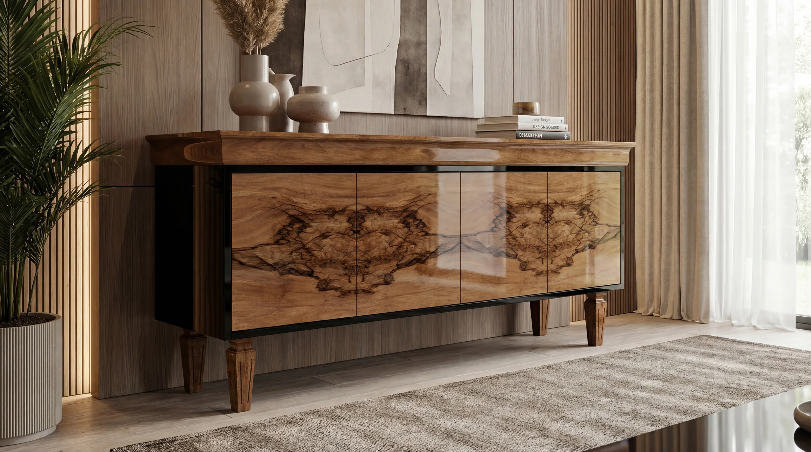
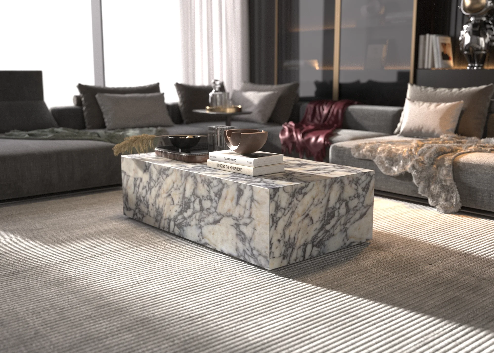
Görünüş, kesit ve hazne detayları atölyenin doğrudan kesime geçebileceği sadelikte çizildi. Tasarım ile üretim arasında yorum payı bırakmamak hedeflendi.
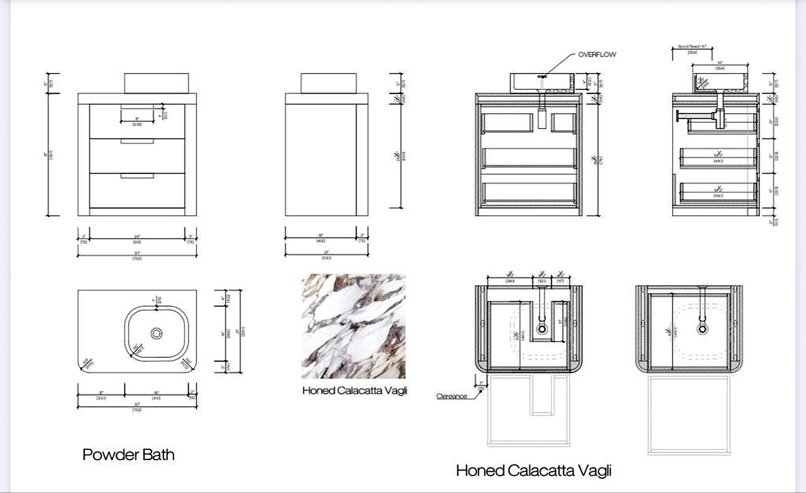
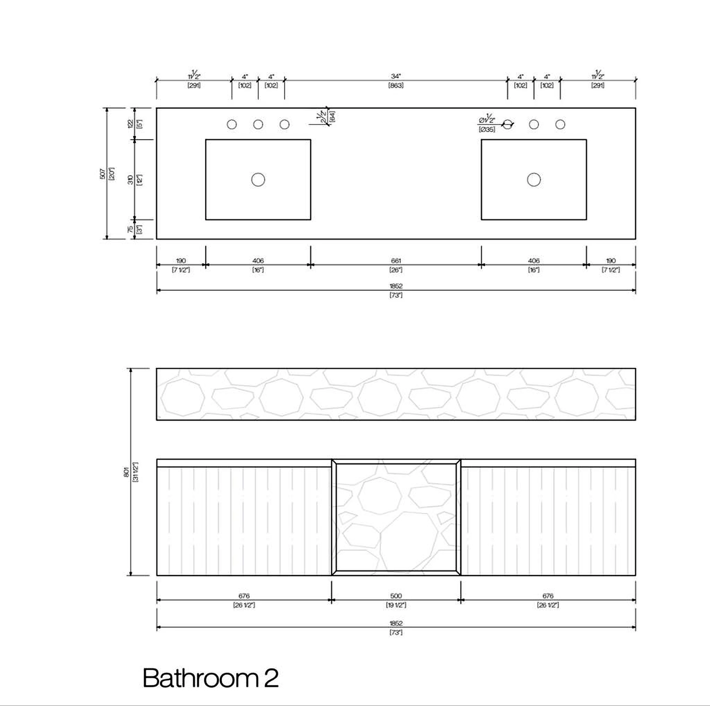
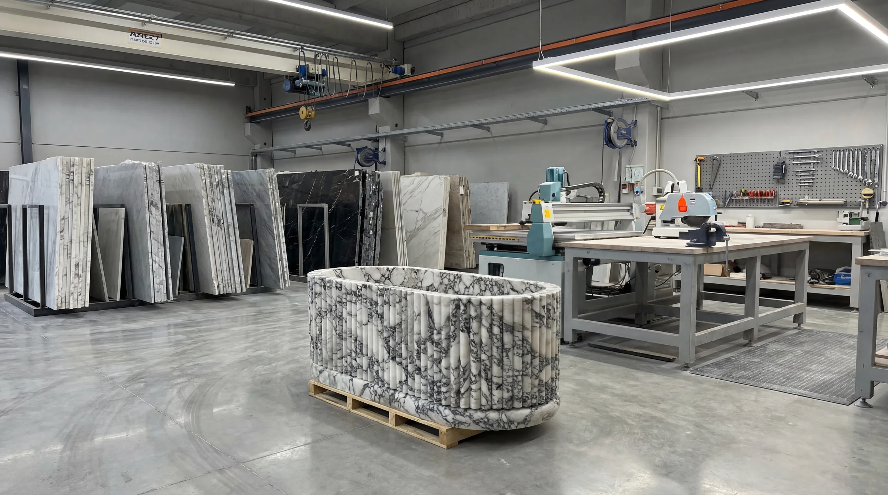
Her ürün projenin nişine, tesisat noktalarına ve kullanıcısına göre boyutlandırılır; standart katalog ölçüsü yerine mekâna göre çözülür.
Plakadaki damarlar kesimden önce yerleştirilir; kapaklarda kitap açılımı, lavabo yüzeyinde kesintisiz akış hedeflenir.
Görünüşler, kesitler ve hazne detayları atölyenin okuyabileceği sadelikte çizilir; tasarım ile kesim arasında yorum payı kalmaz.
Mermer yüzeyler ceviz ve Avrupa meşesi gövdelerle eşleşir; yuvarlak kulp detayı ahşabın içine oyularak sıcak bir karşıtlık kurar.